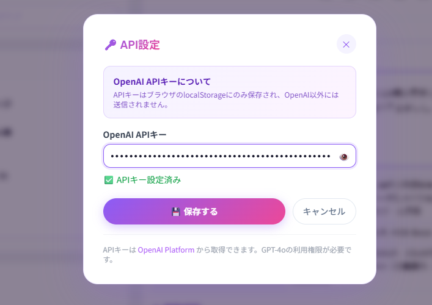
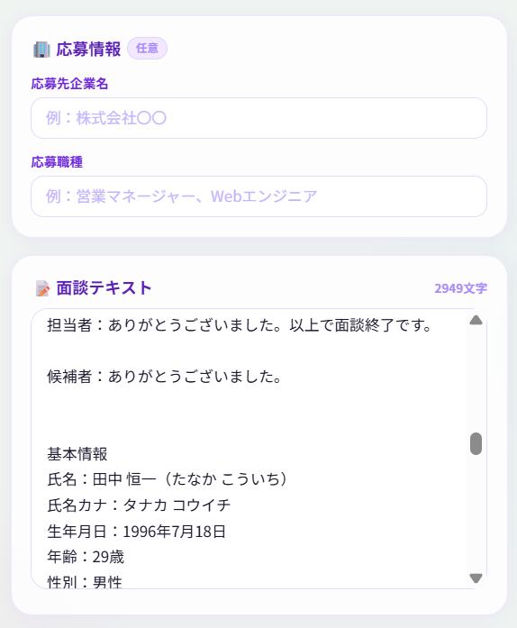
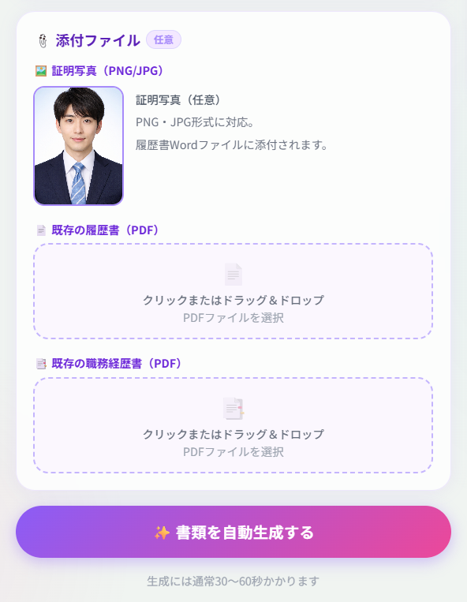
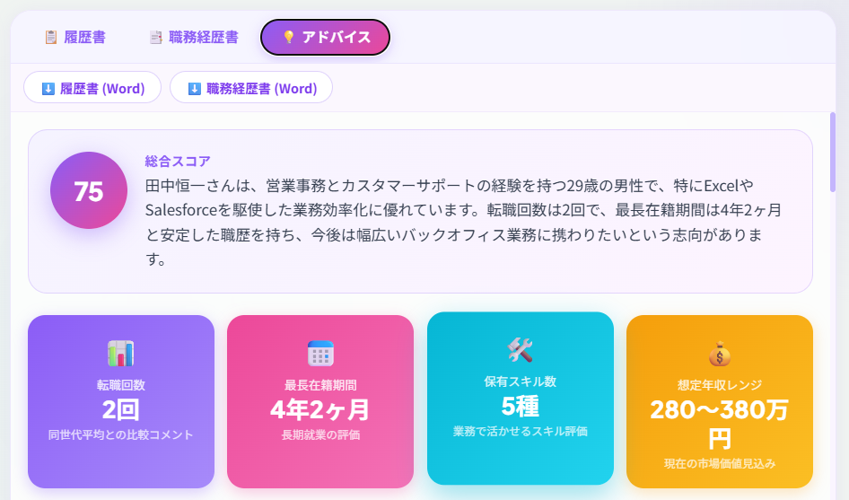
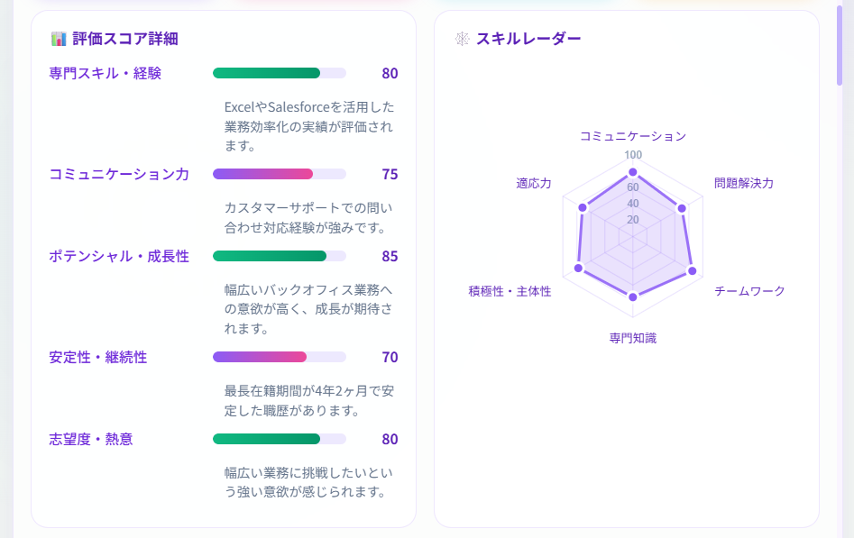
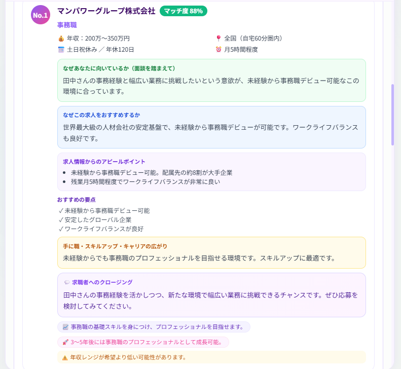
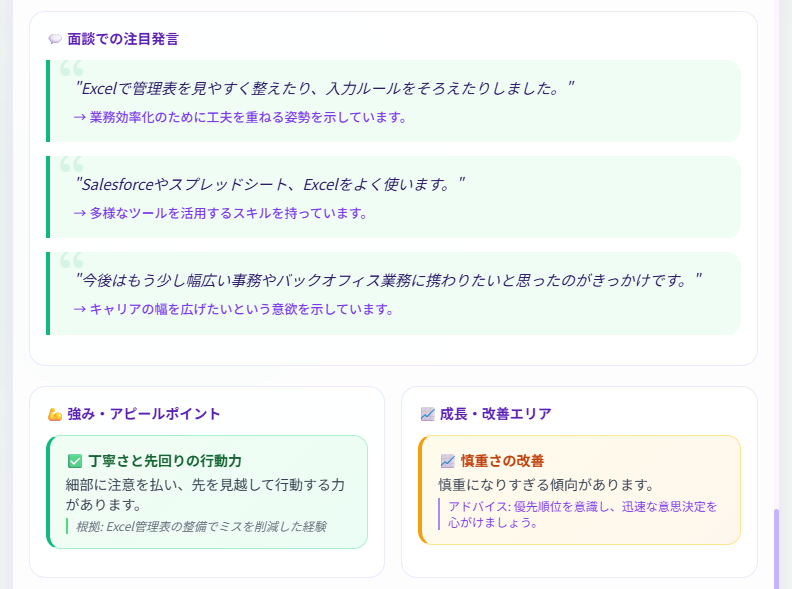
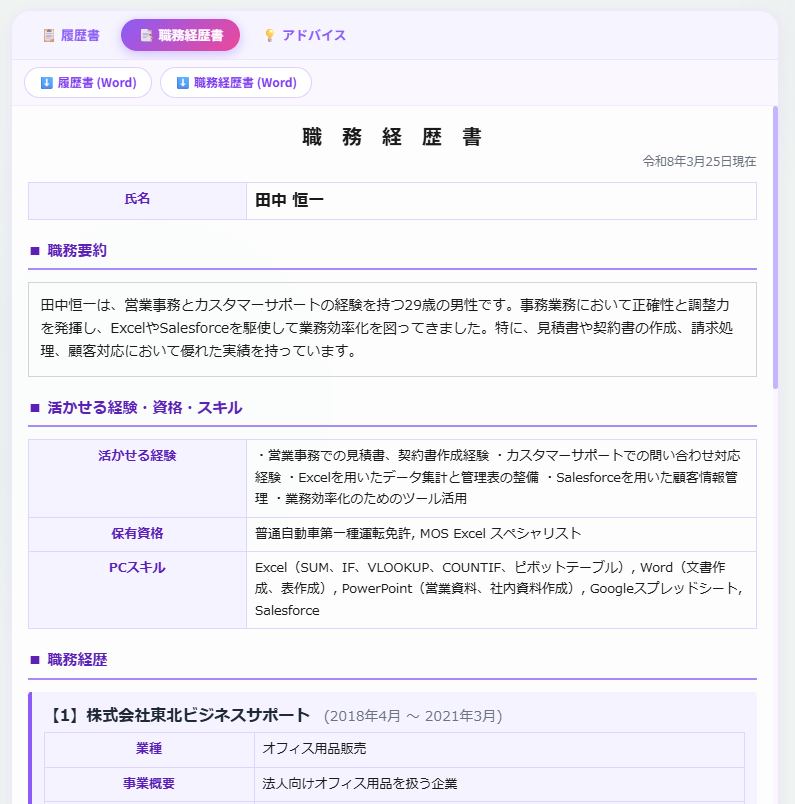
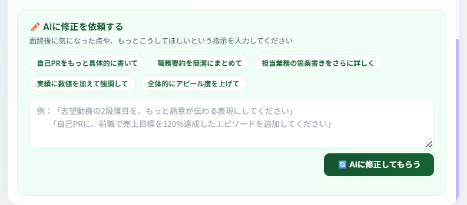
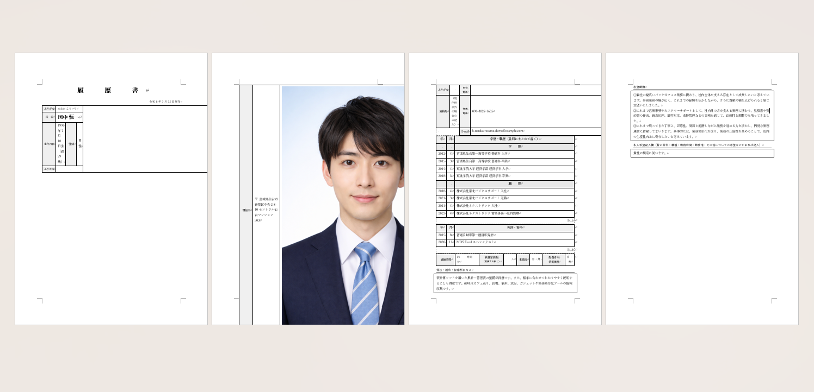

CAサポートAPP
使い方マニュアル
(株)杜の都工房 キャリアアドバイザー向け
全10ステップでわかるアプリの使い方0
APIキーの設定（初回のみ）

アプリを開いたら、まず画面右上の 「設定」ボタン をタップします。
表示されるダイアログに OpenAI APIキー（sk- から始まる文字列）を入力し、「保存する」をタップしてください。
APIキーはブラウザのlocalStorageに保存されるため、同じブラウザ・同じ端末であれば再入力は不要です。
1
応募先・情報入力

「書類を作成する」からアプリを開いたら、左側の入力エリアに以下を入力します。
- 応募情報（任意） — 応募先企業名・応募職種を入力
- 面談テキスト — 面談の文字起こしデータをそのまま貼り付け
面談テキストにはお客様の基本情報（氏名・カナ・生年月日・年齢・性別など）や学歴・職歴・希望条件を含めてください。この情報をもとにAIが書類を自動生成します。
2
顔写真・既存書類の添付

入力エリアの下部にある 「添付ファイル」 セクションで以下を添付できます（すべて任意）。
- 証明写真（PNG/JPG） — 履歴書のWordファイルに添付されます
- 既存の履歴書（PDF） — クリックまたはドラッグ＆ドロップ
- 既存の職務経歴書（PDF） — クリックまたはドラッグ＆ドロップ
すべて入力・添付が完了したら 「書類を自動生成する」 ボタンをタップします。
3
AIアドバイスの確認

生成が完了すると、「アドバイス」タブにAIによるキャリア分析が表示されます。
まず上部に表示される 総合スコア と評価サマリーを確認してください。
その下には以下の4つの指標カードが表示されます。
- 転職回数 — 同世代平均との比較コメント付き
- 最長在籍期間 — 長期就業の評価
- 保有スキル数 — 業務で活かせるスキルの評価
- 想定年収レンジ — 現在の市場価値見込み
4
スコア詳細・タイプ分析

画面を下にスクロールすると 「評価スコア詳細」 と 「スキルレーダー」 が表示されます。
以下の5項目をそれぞれスコアで確認できます。
- 専門スキル・経験
- コミュニケーション力
- ポテンシャル・成長性
- 安定性・継続性
- 志望度・熱意
右側のレーダーチャートでは、コミュニケーション・問題解決力・チームワーク・専門知識・積極性/主体性・適応力の6軸で視覚的に把握できます。
5
おすすめ求人の確認

AIが面談内容をもとに 3件の求人 をおすすめとしてピックアップします。
各求人カードには以下の情報が含まれます。
- マッチ度 — パーセンテージで表示
- 年収・勤務地・休日・残業 — 基本条件の一覧
- なぜあなたに向いているか（面談を踏まえて） — 面談内容に基づく適性分析
- なぜこの求人をおすすめするか — エージェント視点での推薦理由
- 求人情報からのアピールポイント — 求人元のアピール情報
- 手に職・スキルアップ・キャリアの広がり — 成長観点の評価
- 求職者へのクロージング — 求職者への提案に使えるクロージングの言葉
6
面談の注目発言・強み/成長エリア

さらに下にスクロールすると、以下の分析が表示されます。
- 面談での注目発言 — 面談中に印象的だった求職者の発言をAIが抽出し、そこから読み取れる意欲や傾向を分析
- 強み・アピールポイント — 求職者の強みとその根拠（面談中の具体的な経験から導出）
- 成長・改善エリア — 改善が期待できる点とそのためのアドバイス
7
履歴書・職務経歴書の確認

画面上部のタブを 「履歴書」 または 「職務経歴書」 に切り替えると、AIが自動生成した書類のプレビューを確認できます。
上部の 「履歴書 (Word)」「職務経歴書 (Word)」 ボタンからWordデータとしてダウンロードできます。
AIが自動生成した内容は必ず目視でチェックしてください。以下の項目に抜けや間違いがないか確認します。
【履歴書の確認ポイント】
- 氏名・ふりがな・生年月日・年齢
- 住所・電話番号・メールアドレス
- 学歴・職歴（年月・学校名/会社名に誤りがないか）
- 資格・免許
- 志望動機・自己PR
【職務経歴書の確認ポイント】
- 職務要約の内容
- 各社の在籍期間・業種・事業概要
- 担当業務・実績の正確性
- 保有資格・PCスキル
- 自己PRの内容
問題がなければ次のステップに進みます。修正が必要な場合は STEP 8 で対応します。
8
AIへの修正依頼

書類の内容を修正したい場合は、画面下部の 「AIに修正を依頼する」 エリアを使います。
よく使う修正指示がワンタップで入力できるボタンが用意されています。
- 「自己PRをもっと具体的に書いて」
- 「職務要約を簡潔にまとめて」
- 「担当業務の箇条書きをさらに詳しく」
- 「実績に数値を加えて強調して」
- 「全体的にアピール度を上げて」
自由入力欄にはもっと具体的な指示も書けます。入力したら 「AIに修正してもらう」 ボタンをタップしてください。
9
Wordでの最終チェック・顔写真のサイズ修正

ダウンロードしたWordファイル（履歴書＋職務経歴書）を開いた状態
ダウンロードしたファイルは Wordデータ（.doc） で出力されます。
Wordで開いたら、以下を必ず確認・修正してください。
証明写真を添付した場合、Word上では写真が大きく表示されてしまいます。
以下の手順でサイズを修正してください。
- Wordファイルを開き、顔写真をクリックして選択
- 写真を右クリック →「図の書式設定」を開く
- 「サイズ」タブで 高さ：約4cm、幅：約3cm 程度に変更
- 写真の位置を調整し、枠内に収める
顔写真だけでなく、履歴書・職務経歴書の全項目を再度チェックしてください。
- 誤字・脱字がないか
- 年月や会社名・学校名に間違いがないか
- 抜けている情報がないか
- フォントやレイアウトの崩れがないか
全ての確認が完了したら、PDFとしてダウンロードしてください。
完成書類のサンプル
実際に出力される書類のサンプルです。内容や体裁の参考にしてください。